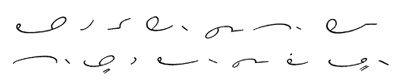
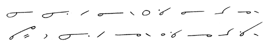

| Home Reporting A Judge’s Charge Dupraw’s Notes Sklarew’s Notes Zoubek’s Notes Pre-Anniversary Description Reference Material Brief Form List Anniversary Description Reading Material Reference Material Brief Form List Most-Used Phrases Simplified Description Brief Form List Dupraw on Note Size Diamond Jubilee Description Brief Form List Expert Brief Form List Series 90 Description Brief Form List Centennial Description Brief Form List Taquigrafía Gregg Gramálogos German Gregg Manual Esperanto Gregg Manual Brief Forms Irish Gregg Manual Gregg Group Gregg Learning Forum Ms. Letha’s SH Site Shorthand³ Omniglot's Entry Wikipedia's Entry Stenospeed Dictation Practice Andrew Owen |
CHAPTER I Unit 1 1. Shorthand is written by sound; thus aim is written am (long sound of a), cat is written kat, knee is written ne. Since we are learning shorthand to save time in writing, it is necessary to ignore those letters that aren't pronounced. Consonants 2.
The consonants are arranged in pairs, according to their similarity
of sound, and are distinguished by a difference in length. For
instance, k and g are both produced in the same
place in the mouth and likewise resemble each other in shorthand. 3.
All these consonants are written forward from left to right;
th and t and d are struck upwards
from the line of writing. The g given in this lesson
is called gay, being the hard sound as in game,
get, and not the soft sound heard in gem, magic. The aspirate h is indicated by a dot placed over
the vowel.
Each of these strokes begins and ends on the same plane. The beginning and the end of k and g rest on the line of writing. R and l rest on the line of writing as a saucer would rest on a table. Even though d is about twice the length of t, d should only go up about two thirds of the line of writing. 4. Phrasing. The joining of simple words is a great help to accuracy and speed in writing shorthand, and its acquirement should not be deferred until the habit of writing common words separately has been formed.
5. Punctuation, etc. In shorthand the following marks are used:
6. Sentence Drill 7. In shorthand there are twelve distinct vowel sounds, which are arranged in four groups, and three closely related sounds are placed in each group. In this lesson we have the first two groups, which for convenience are named the A group and the E group. Memory aid: The A Group The E Group Note: The first sound in the E group of vowels is the short i, heard in din, and should not be confused with long i, heard in dine, which will be given later. 8.
Marking Vowels. The vowels are grouped according
to similarity in sound. The large circle expresses three sounds
of a. The short sound is unmarked, the medium sound
is marked with a dot, and the long sound with a short dash, as shown
in paragraph 7. This system of marking is used in all vowel
groups uniformly. Picturing Writing Motion 9. Frequently we shall have to refer to writing motion. The curved characters in this lesson are taken from horizontal ovals, one written with right motion, the other with left. The right motion is clockwise; the left, counterclockwise.
10. Characters taken from the left-motion oval are called left-motion, because the rotation is from left to right; characters taken from the right-motion oval are called right-motion for a like reason; thus: The terms "left motion" and "right motion" refer to the rotation in movement, and not to the direction. How Circles Are Joined The following movement drills are intended to develop skill in the joining of circles. 11. Circles Joined to Single Strokes. At the beginning or end of a single curve, the circle is placed inside the curve. Let us examine more closely how to join a circle to a curve, using a-k, a-g, r-a, and l-a. The dotted line shows the position of the circle in relation to the curve. (Remember, the dotted line in r-a and l-a does not represent the line of writing. The base of the r and of the l rests on the line of writing.)
 Key: He lay there in the air. I cannot go. I will not go. Ray is ill. He cannot hear Lee. 12. At the beginning or end of a single straight stroke, the circle is written with right motion. Observe closely the joinings a-d, d-a, a-m, and m-a. In joining the circle to a straight line, start and finish as shown by the dotted lines. Keep straight lines absolutely straight. Practice with the following sentences:  Key: I am aiming at him. I hit him in the knee. Eddy is aiming at me. He hit me in the head. 13. Reading and Dictation Practice
|